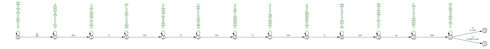
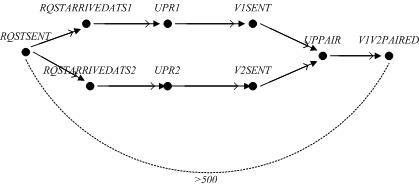
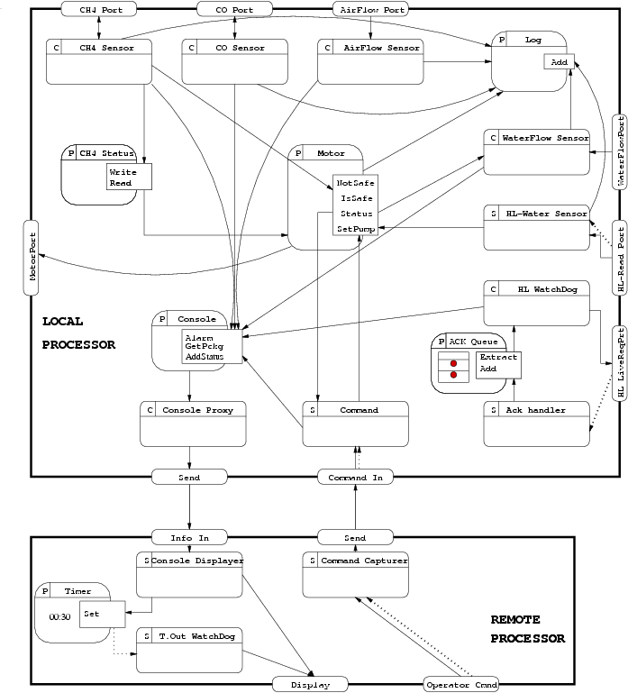

Examples
Each example is stored in different folders and
contains a 'README' file with running explanations.
Download the examples
Details:
| Model | #TAs | #Clocks | Observer | |
| #Loc | #Trans | |||
| Pipe6 | 13 | 14 | 15 | 197 |
| Pipe7 | 15 | 16 | 17 | 227 |
| Fddi10 | 21 | 32 | 21 | 221 |
| RemoteBR | 12 | 13 | 29 | 395 |
| MinePump | 8 | 8 | 9 | 58 |
| Struct | 6 | 7 | 8 | 50 |
Pipe6 and Pipe7 are pipe-lines of sporadic processes that forward
a signal emitted by a quasi periodic source (6 and 7 stages
resp.). The observer captures a scenario violating an end-to-end constraint for
signal propagation.
Pipe6 observer.

Pipe6 activity tables.
| Obs | Revelant Components | Relevant Clocks | ||||||||||||||||||||||||||
| 0 | observer6 | f120 | l1 | l2 | l3 | l4 | l5 | l6 | p1 | p2 | p3 | p4 | p5 | p6 | S | X1 | X2 | X3 | X4 | X5 | X6 | Z1 | Z2 | Z3 | Z4 | Z5 | Z6 | |
| 1 | observer6 | l1 | l2 | l3 | l4 | l5 | l6 | p1 | p2 | p3 | p4 | p5 | p6 | R | X1 | X2 | X3 | X4 | X5 | X6 | Z1 | Z2 | Z3 | Z4 | Z5 | Z6 | ||
| 2 | observer6 | l2 | l3 | l4 | l5 | l6 | p1 | p2 | p3 | p4 | p5 | p6 | R | X2 | X3 | X4 | X5 | X6 | Z1 | Z2 | Z3 | Z4 | Z5 | Z6 | ||||
| 3 | observer6 | l2 | l3 | l4 | l5 | l6 | p2 | p3 | p4 | p5 | p6 | R | X2 | X3 | X4 | X5 | X6 | Z2 | Z3 | Z4 | Z5 | Z6 | ||||||
| 4 | observer6 | l3 | l4 | l5 | l6 | p2 | p3 | p4 | p5 | p6 | R | X3 | X4 | X5 | X6 | Z2 | Z3 | Z4 | Z5 | Z6 | ||||||||
| 5 | observer6 | l3 | l4 | l5 | l6 | p3 | p4 | p5 | p6 | R | X3 | X4 | X5 | X6 | Z3 | Z4 | Z5 | Z6 | ||||||||||
| 6 | observer6 | l4 | l5 | l6 | p3 | p4 | p5 | p6 | R | X4 | X5 | X6 | Z3 | Z4 | Z5 | Z6 | ||||||||||||
| 7 | observer6 | l4 | l5 | l6 | p4 | p5 | p6 | R | X4 | X5 | X6 | Z4 | Z5 | Z6 | ||||||||||||||
| 8 | observer6 | l5 | l6 | p4 | p5 | p6 | R | X5 | X6 | Z4 | Z5 | Z6 | ||||||||||||||||
| 9 | observer6 | l5 | l6 | p5 | p6 | R | X5 | X6 | Z5 | Z6 | ||||||||||||||||||
| 10 | observer6 | l6 | p5 | p6 | R | X6 | Z5 | Z6 | ||||||||||||||||||||
| 11 | observer6 | l6 | p6 | R | X6 | Z6 | ||||||||||||||||||||||
| 12 | observer6 | p6 | R | Z6 | ||||||||||||||||||||||||
| 13 | observer6 | |||||||||||||||||||||||||||
| 14 | observer6 | |||||||||||||||||||||||||||
Fddi10 is an extension of the FDDI token Model ring protocol where the
observer monitors the time
the token takes to return to a given station.
RemoteBR is a design composed of a central component and two remote
sensors. When the central component needs sampled data, it broadcasts a request
to the sensors. Each sensor handles requests by reading the last stored value by
the sampler and sending it back to the central component. There, the readings
are paired for further processing. The observer captures scenarios where a
request for collecting a pair of data items is not fully answered in less than a
given amount of time.
RemoteBR scenario speficifaction in VTS.

| Obs | Revelant Components | Relevant Clocks | |||||||||||||||||||
| 0 | obsbr | netv1 | netv2 | pair | requester | lpair | l1 | l2 | reader1 | reader2 | netrqst | N1 | N2 | P | PA | R1 | R2 | S | X1 | X2 | X_RQSTSENT |
| 1 | obsbr | ||||||||||||||||||||
| 2 | obsbr | netv1 | netv2 | pair | lpair | l1 | l2 | reader1 | reader2 | netrqst | N1 | N2 | P | PA | R1 | R2 | X1 | X2 | X_RQSTSENT | ||
| 3 | obsbr | netv1 | netv2 | pair | lpair | l1 | l2 | reader1 | reader2 | netrqst | N1 | N2 | P | PA | R1 | R2 | X1 | X2 | X_RQSTSENT | ||
| 4 | obsbr | netv1 | netv2 | pair | lpair | l2 | reader1 | reader2 | netrqst | N1 | N2 | P | PA | R1 | R2 | X2 | X_RQSTSENT | ||||
| 5 | obsbr | netv1 | netv2 | pair | lpair | l2 | reader2 | netrqst | N1 | N2 | P | PA | R2 | X2 | X_RQSTSENT | ||||||
| 6 | obsbr | netv2 | pair | lpair | l2 | reader2 | netrqst | N2 | P | PA | R2 | X2 | X_RQSTSENT | ||||||||
| 7 | obsbr | netv2 | pair | lpair | l2 | reader2 | P | PA | R2 | X2 | X_RQSTSENT | ||||||||||
| 8 | obsbr | netv2 | pair | lpair | reader2 | P | PA | R2 | X_RQSTSENT | ||||||||||||
| 9 | obsbr | netv2 | pair | lpair | P | PA | X_RQSTSENT | ||||||||||||||
| 10 | obsbr | pair | lpair | PA | X_RQSTSENT | ||||||||||||||||
| 11 | obsbr | pair | X_RQSTSENT | ||||||||||||||||||
| 12 | obsbr | ||||||||||||||||||||
| 13 | obsbr | netv1 | netv2 | pair | lpair | l2 | reader2 | N2 | P | PA | R2 | X2 | X_RQSTSENT | ||||||||
| 14 | obsbr | netv1 | netv2 | pair | lpair | reader2 | N2 | P | PA | R2 | X_RQSTSENT | ||||||||||
| 15 | obsbr | netv1 | netv2 | pair | lpair | N2 | P | PA | X_RQSTSENT | ||||||||||||
| 16 | obsbr | netv1 | pair | lpair | P | PA | X_RQSTSENT | ||||||||||||||
| 17 | obsbr | netv1 | netv2 | pair | lpair | l2 | reader1 | reader2 | N2 | P | PA | R1 | R2 | X2 | X_RQSTSENT | ||||||
| 18 | obsbr | netv1 | netv2 | pair | lpair | reader1 | reader2 | N2 | P | PA | R1 | R2 | X_RQSTSENT | ||||||||
| 19 | obsbr | netv1 | netv2 | pair | lpair | reader1 | N2 | P | PA | R1 | X_RQSTSENT | ||||||||||
| 20 | obsbr | netv1 | pair | lpair | reader1 | P | PA | R1 | X_RQSTSENT | ||||||||||||
| 21 | obsbr | netv1 | netv2 | pair | lpair | l1 | l2 | reader1 | reader2 | N2 | P | PA | R1 | R2 | X1 | X2 | X_RQSTSENT | ||||
| 22 | obsbr | netv1 | netv2 | pair | lpair | l1 | reader1 | reader2 | N2 | P | PA | R1 | R2 | X1 | X_RQSTSENT | ||||||
| 23 | obsbr | netv1 | netv2 | pair | lpair | l1 | reader1 | N2 | P | PA | R1 | X1 | X_RQSTSENT | ||||||||
| 24 | obsbr | netv1 | pair | lpair | l1 | reader1 | P | PA | R1 | X1 | X_RQSTSENT | ||||||||||
| 25 | obsbr | netv1 | netv2 | pair | lpair | l1 | l2 | reader1 | reader2 | netrqst | N1 | N2 | P | PA | R1 | R2 | X1 | X2 | X_RQSTSENT | ||
| 26 | obsbr | netv1 | netv2 | pair | lpair | l1 | reader1 | reader2 | netrqst | N1 | N2 | P | PA | R1 | R2 | X1 | X_RQSTSENT | ||||
| 27 | obsbr | netv1 | netv2 | pair | lpair | l1 | reader1 | netrqst | N1 | N2 | P | PA | R1 | X1 | X_RQSTSENT | ||||||
| 28 | obsbr | netv1 | pair | lpair | l1 | reader1 | netrqst | N1 | P | PA | R1 | X1 | X_RQSTSENT | ||||||||
Minepump is a design of a fault-detection mechanism for a distributed
mine-drainage controller. A watchdog task periodically checks the
availability of a water level sensor device by sending a request and extracting
acks that were received and queued during the previous cycle by another sporadic
task. When the watchdog finds the queue empty, it registers a fault condition in
a shared memory which is periodically read, and forwarded to a remote console,
by a proxy task. The observer checks if the failure of high-low water sensor is
always informed to the remote operator before a given deadline.

Struct is an adaptation of a well-know working design: the active
structural control system that limits structural vibration due to earthquakes or
strong winds. The pulse-control algorithm is mapped into two tasks: the Modeler
and the Pulser. The Modeler is a sporadic task
which, once initialized, serves the messages arriving from the sensor. Then, it
updates in a predictive fashion a model stored in a shared protected object
Model and starts a new communication with the sensor to be served in the next
invocation. The Pulser periodically (110 time units (t.u.)) reads the model,
calculates the pulse magnitude and starts a communication with the actuator (which
in turn will expand to counteract external forces). The sampling takes within 50
and 55 t.u., then the data is prepared within 10 t.u. The actuator applies the
pulse for a duration within 25 to 30 t.u., and then data is prepared for
communication (10. t.u. aswell). The Comm component models handshake
communication where it takes within 3 and 5 t.u. to perform the communication (message
and acknowledgement).